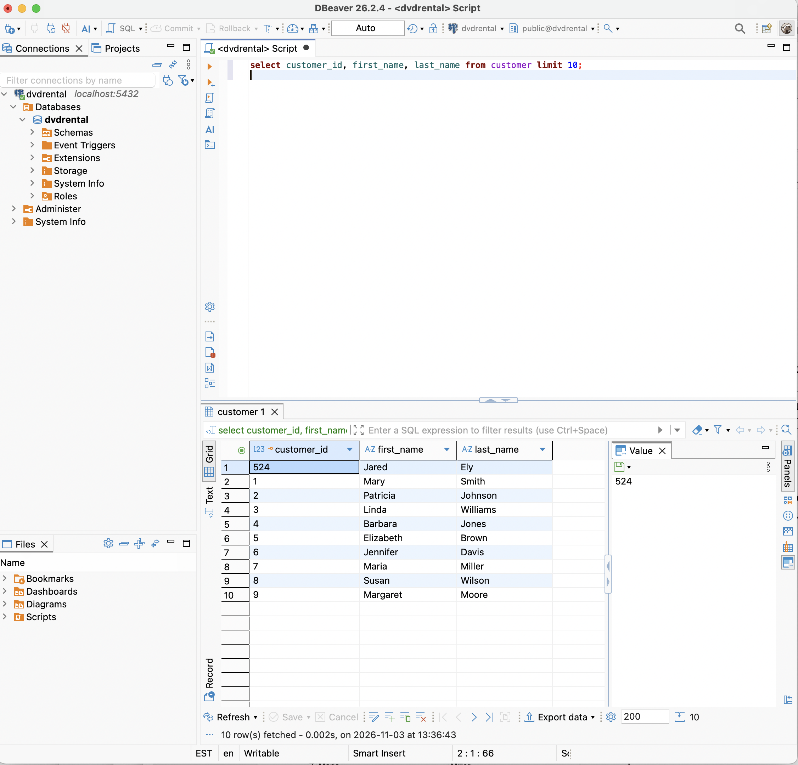

Lab
5 Details for MPCS 51205
Each
lab
will consist of a small problem and details of how to
proceed. Each lab is intended to give every student hands-on
experience with the core technologies utilized during the
course. A student may concentrate, as a team member, on
one technology over another for the final project, but labs are
designed to give each and every student exposure to all the
technologies that come into play. You need to submit labs
to the TAs for grading--see submission instructions below.
Generally, unless otherwise specified, you will have one week to
complete each assigned lab.
See
the
syllabus for information on grading. Turning in lab
assignments on time is required, without exception, and all late deliveries will be
penalized, regardless
of cause. Submit your assignments to the
subversion repository according to the directions on the
syllabus page.
You
may
write these solutions in either
Java or C++...your choice.
Lab 5
Due: 5:00 pm, Tuesday, December 1,
2026
Problem
1: Playing With Docker and PostgresSQL:
BACKGROUND:
Like
all programming problems, learning a new technology is not an
exercise in reading but rather and exercise in typing.
This lab is designed to give you hands-on experience in (a)
running a dockerized RMI client program that (b) communicates
with an RMI server program in another docker container which
then gets sample data from a PostgresSQL database and (b)
returns that data to the dockerized RMI client program.
You will generally find the References section below helpful in
addition to the required and recommended reading. When we
talk about "Docker", we are talking specifically about the Stable Community Edition of
Docker, which is the version we will be using in this
class. The Stable Community Edition provides the basic
container engine and built-in orchestration, networking, and
security.
Note that this lab will focus on and exercise interprocess communication
and accessing Postgres from a remote
client via an RPC metaphor (Java RMI). Please keep in mind
that in your actual microservices architecture that you are
creating for the final project deliverable, as each microservice has its own
datastore, you will likely only be hitting Postgres
from a local
microservice, which is of course simpler, and not remotely...as
shared persistence among
microservices is generally a NO-NO. Consider also
that each microservice
will likely have an instance of either PostgresSQL or MongoDB as their datastore, and will be
making local calls to
that datastore.
WHAT YOU NEED TO DO:
STEP 1:
For
this
fifth lab, we are going to code a little microservice that will
accept a synchronous call over RMI to a server with a backing
PostgresSQL database. That RMI Server will obtain data
from the PostgresSQL database, and return it to an RMI Client
running in a separate container. You will not need to run
a script capture on this lab, as you will be submitting your two
client and server docker containers.
First,
make
sure docker is running either on your laptop (Option I from the
first lab) (or in your VM if you are working in VirtualBox,
etc.).
STEP 2:
Get Java RMI working in a
Docker Container (CLIENT)
First, get
down the Apache Httpd Server version 2.4 container. Do
this by executing the following command (make sure you understand
the meaning and significance of -p 8080:8080):
docker run -di --hostname httpdserver
--name Lab5HttpdServer -p 8080:8080
tomcat:10.1-jdk17-temurin-noble
Once you have that container down (and running), obtain a bash
shell in that container by running docker exec into the
container. Once you are in that httpd container, install
some software in the container. You will
update the ubuntu OS, then install the vi editor, the Java 1.7.x
JDK, and net-tools, which will allow you to run network-related
utilities including ifconfig.
apt-get update
apt-get install -y vim
apt-get install -y net-tools
apt-get install -y openssh-client
Create a subdirectory called "/src/lab5" and cd into that
directory.
Now, get RMI.tgz down into your container. You can
retrieve this file on Canvas under (use docker cp to copy it
into your container):
/Files/LABS/Lab.5/RMI.tgz
Now unzip that file and docker cp the tarball into the /src/lab5
directory of your container and untar the contents. You
should have a new RMI subdirectory under /src/lab5.
Now, cd into /src/lab5/RMI
Cat the README file and compile the java client and server
(ignore any warnings or notes). Refer again to the README
file on how to run the client and server.
This container will serve as your "CLIENT" container for the
synchronous exercise of this lab. Don't be confused by the
name of this container. Although it is the httpd server
and is named Lab5HttpdServer, it will still function as our CLIENT for this lab.
STEP 3:
Get PostgresSQL working in a
Docker Container (SERVER)
Next, in a separate terminal window get down
a PostgresSQL version 15.19 container by running this command:
docker run --name Lab5PostgresServer
--hostname postgres -e POSTGRES_PASSWORD=mysecret -e
POSTGRES_HOST_AUTH_METHOD=password -p 5432:5432 -d
postgres:15.19
Docker exec a bash shell into your new PostgresSQL server and
poke around a bit. Run the following updates in your
Postgres_server:
apt-get update
apt-get install -y vim
apt-get install -y default-jdk
apt-get install -y net-tools
apt-get install -y openssh-client
apt-get install -y unzip
Now, get the postgres dvdrental database down into your
container. You can retrieve this file on Canvas under:
/Files/LABS/Lab.5/dvdrental.zip
Now unzip that file and docker cp the tarball into the root
directory of your container.
Once you've retrieved the sample DVD rental
database file and have copied it into your container, run the
following instructions to install the sample database into your
Postgres container:
1: Get into a postgres shell (from /):
psql --username postgres
2: At the postgres shell prompt (postgres=#),
create a new database called dvdrental and then exit out of your
postgres shell (\q):
create database dvdrental;
dvdrental=#
create database
dvdrental; //this will create the
dvdrental database
CREATE
DATABASE
dvdrental=# \q
3: Now run gp_restore to load the dvdrental.tar SQL
commands to create the set of tables in your dvdrental database
you just created. From your container's prompt, run:
root@postgres:/# pg_restore -U
postgres -d dvdrental /dvdrental.tar
You should see no output and no errors. At this point, you
can hop back into your postgres shell and take a look at the new
tables you've created (it will match the logical diagram of the
dvd rental sample database here: http://www.postgresqltutorial.com/wp-content/uploads/2018/03/printable-postgresql-sample-database-diagram.pdf):
root@postgres:/# psql --username
postgres //this command from the
container prompt will put you back in the PostgresSQL shell
dvdrental=# \c dvdrental;
//this will change to the dvdrental database
dvdrental=# \l
//this will list all the database instances in your
PostgresSQL instance (you should see "dvdrental")
dvdrental=# \dt
//this will
list (dump) all the tables in the dvdrental database (this
should match the logical diagram linked above)
Now, issue a few SQL commands to investigate the data (don't
type the bold prompt and make no changes of course!):
dvdrental=# select
count(*) from customer;
dvdrental=# select count(*)
from film;
dvdrental=# select
* from customer limit 10;
dvdrental=# select
customer_id, first_name, last_name from customer limit 10;
Examine the output from these commands carefully, especially the
output from the last. Now exit out of psql:
dvdrental=#
\q
Create a new
subdirectory called "/src/lab5" in your Lab5PostgresServer
container and cd into that directory. cd to
that directory. Next, download RMI.tgz from the cluster
(see below) and copy it into your container and untar the
contents into your lab5 subdirectory:
Now, get RMI.tgz down into your container. You can
retrieve this file on Canvas under:
/Files/LABS/Lab.5/RMI.tgz
Now unzip that file and docker cp the tarball into the /src/lab5
directory of your postgres SERVER container.
Now cd into the new RMI subdirectory and cat the README file and
compile the java client and server (ignore any warnings or
notes). Then execute the server and in a new terminal
window making sure everything is running. Refer again to
the README file on how to run the client and server. Carefully note
the IP address of the server (like "172.17.0.4" etc.).
Are you having fun yet?
NOTE: There are a few free GUI front ends for MacOS
for PostgresSQL that are available for download. Go here to download the
community version of DBeaver. You may choose to install
it. Here's a snapshot of DBeaver connected to the
dbdrental database in the docker container and executing that
last select query above (hitting our dvdrental database in our
PostgresSQL container):

There may be other tools for other OSs
similar to DBeaver on the mac, including TablePlus.
This container will serve as your SERVER container for the synchronous exercise of
this lab.
STEP 4:
Verify the Java JDK in the
PostgresSQL working in the Docker Client Container
Exec into your tomcat container Lab5HttpdServer (if you're
not already there). Make sure you are in your
/src/lab5/RMI.orig/RMI directory.
Make sure you are in your /src/lab5/RMI directory. Get the
Postgres java driver down:
apt-get update
apt-get install -y curl
curl -fL -o postgresql-42.7.5.jar
https://repo1.maven.org/maven2/org/postgresql/postgresql/42.7.5/postgresql-42.7.5.jar
Now, set your CLASSPATH so that it includes
this directory, something like:
export
CLASSPATH=/src/lab5/RMI/postgresql-42.7.5.jar:.
Make sure that you
don't forget the final ":." in that line above!
Now, get JdbcTest.java.You can retrieve this file on Canvas
under:
/Files/LABS/Lab.5/JdbcTest.java
docker cp it into your Lab5HttpdServer container, maybe into the
same subdirectory you're using for you RMI code. Now
compile JdbcTest.java. Make sure whatever terminal you use
to execute javac or java has the CLASSPATH set above.
Find out the
IP address of the Postgres Server container (you should have
noted it above). Inside your Lab5PostgresServer container,
type ifconfig.
Note the IP address of the eth0 interface in that container (it
should be something like "inet addr:172.17.0.2" or something
like that). Pay particular attention to the proper
IP address of your Postgres server container. It may be
172.17.0.3 or 172.17.0.4 or something
else. You need to replace the connectionUrl string's IP
address in your JdbcTest.java file with the correct actual
server IP. Note that the root user and password secret
lines should be fine. Recompile JdbcTest.java
in Lab5HttpdServer and run it
with this command:
java JdbcTest
Hopefully, you will get output that matches the same output from
the last query command you typed in the PostgresSQL shell above,
namely, you'll see Jared Ely, Mary Smith, Patricia Johnson, all
good friends of mine:
calling Class.forName()
building connection string
calling getConnection
executing query
entering for loop
customer id: 524, First Name: Jared, Last
Name: Ely
customer id: 1, First Name: Mary, Last Name:
Smith
customer id: 2, First Name: Patricia, Last
Name: Johnson
customer id: 3, First Name: Linda, Last
Name: Williams
customer id: 4, First Name: Barbara, Last
Name: Jones
customer id: 5, First Name: Elizabeth, Last
Name: Brown
customer id: 6, First Name: Jennifer, Last
Name: Davis
customer id: 7, First Name: Maria, Last
Name: Miller
customer id: 8, First Name: Susan, Last
Name: Wilson
customer id: 9, First Name: Margaret, Last
Name: Moore
If you see something resembling this, you're in great
shape. Your JdbcTest java test program running on the
CLIENT Lab5HttpdServer just hit your Postgres instance in your
SERVER Lab5PostgresServer.
You are indeed a Boss.
STEP 5:
Verify that your RMIClient
program running in your docker client can talk to the
RMIServer program running in your docker server.
Find out the IP address of the Server
container. Inside your Lab5PostgresServer container,
type ifconfig. Note the IP address of the eth0 interface
in that container (it should be something like "inet
addr:172.17.0.3" or something like that).
Now we need to connect our RMIClient running on our CLIENT (Lab5HttpdServer) to the
RMIServer running on our SERVER (Lab5PostgresServer). To do
this, on your Lab5PostgresServer
SERVER execute the RMIServer program.
On your Lab5PostgresServer
SERVER, execute java RMIServer.
Note the "using address" line, especaially the IP address.
Now, in your CLIENT container ((Lab5HttpdServer), execute
your client against your server, using a command similar to
this: "java RMIClient 172.17.0.3 12345 "hi".
Of course you would use the correct IP address for your
SERVER. Make sure that your RMIServer prints out the
string you passed in. Once that's done, you're
almost finished. You can stop your RMIServer program.
STEP 6:
Modify your RMIServer and
RMIClient to execute a remote database access call and return
the result to the remote client.
On your Lab5PostgresServer
SERVER that is running your Postgres
instance, use vi (or whatever you've installed as its
alternative) to modify the RemoteInterface.java code.
Change the RemoteInterface class's recieveMessage() method so
that instead of returning void, it returns an int.
Then, modify on the CLIENT the source code for
RemoteInterface.java, and make the same change to the return
value of the receiveMessage() call from void to int, as your new
receiveMessage() function will be returning an int instead of a
void. Have that function print out the integer returned
from the server via receiveMessage().
Then, create a new function in your RMIServer.java source (very similar to the main()
function in JdbcTest class in JdbcTest.java) on your SERVER that
when called and passed in a String tableName, hits the (local to the SERVER
container) PostgresSQL database table whose name was passed in,
and executes a SELECT COUNT(*) on that table, and returns the
numeric result of the number of records in the table returned
from the SELECT call. So, for example, if you pass in the
table name "customer" to the client, the remote server would
return the int 599 to the client, because there are 599 records
in the customer table. If you were to pass in the table
name "film" to the client (running on CLIENT (Lab5HttpdServer), such as:
# java RMIClient 172.17.0.3 12345 film
the remote server would return 1000, because there are 1000
records in the film table on the server. So the prototype
of the new functions might be something like:
public int execute_it(String tableName)
{
//this code will hit the local Postgres database table
"tableName" and execute a query similar to "select *
from departments",
//and will return the
result set's result, in this case, the int "9" because there
are 9 records in the departments table...
System.out.println("Server returned integer result: "+retval);
return retval;
}
Then simply have your receiveMessage function that implements
RemoteInterface call your new function and return the result,
such as:
public int
receiveMessage(String tableName) throws RemoteException
{
System.out.println("In
RMIServer's receiveMessage method. Received TableName: "
+ tableName);
int y =
execute_it(tableName); // the return value is the number
of rows in tableName
System.out.println("Returning integer y from RMIServer:"+y);
return y;
}
STEP 7:
Run it all.
Your output should look something
like this (doesn't have to exactly match this but this is the
idea):
CLIENT:
root@3f2c68786aae:/src/lab5/RMI# java RMIClient 172.17.0.7
12345 film
sending film to 172.17.0.7:12345
returned count: 1000
root@3f2c68786aae:/src/lab5/RMI# java RMIClient
172.17.0.7 12345 customer
sending customer to 172.17.0.7:12345
returned count: 599
SERVER:
root@62007982f963:/src/lab5/RMI# java RMIServer
using address=62007982f963/172.17.0.7,port=12345
In RMIServer's receiveMessage method. Received
TableName: film
In RMIServer's receiveMessage method. Received
TableName: customer
Once you have your new changes all executing properly, you're
done. Submit as instructed below.
References:
You
may
find the following references helpful (in addition to the links
from previous labs):
Ubuntu
package
commands
The docker page
for Postgres
General Docker Tutorial Links
Docker
Cheat
Sheet
Submission:
For Labs:
Each student should submit their Lab_N files and any supporting
materials to the repo. Use the folder named "lab_5" in your
repository (create it if necessary). Please include a README
text file that contains any instructions or additional details for
the TAs to assist with grading.
Setup:
We will be using the MPCS GitLab server for version control. The
department has published a tool to replace GitHub's Classroom. You
will login with your CNET ID at
https://course-repos.cs.uchicago.edu/. Here you will find classes
you're registered for that have repositories for that class. You
will click on the MPCS 51205 — Topics in Software Engineering course
for which the repository has been created for then that should take
you to the repository that's been created. You can click on your
CNETID (as that should have a hyperlink) to take you to the GitLab
repository page. That page will contain the instructions needed to
clone your repository. You will then perform standard git add, git
commit, git push for all homework assignments. This will mean you
will perform mkdir commands to create lab repos, which you will push
up to your source main branch.
Please reach out if you have any questions or issues.
Use the folder named "lab_5" in your Subversion repository (create
it if necessary). Upload your Lab 5 CLIENT and SERVER tarballs
(docker export) to this repo. gzip each tarball before
submitting. Please include a README text file that contains
any instructions for the TAs to assist with grading (especially with
instructions on how to run/launch your containers), and design notes
are often a useful thing to provide.